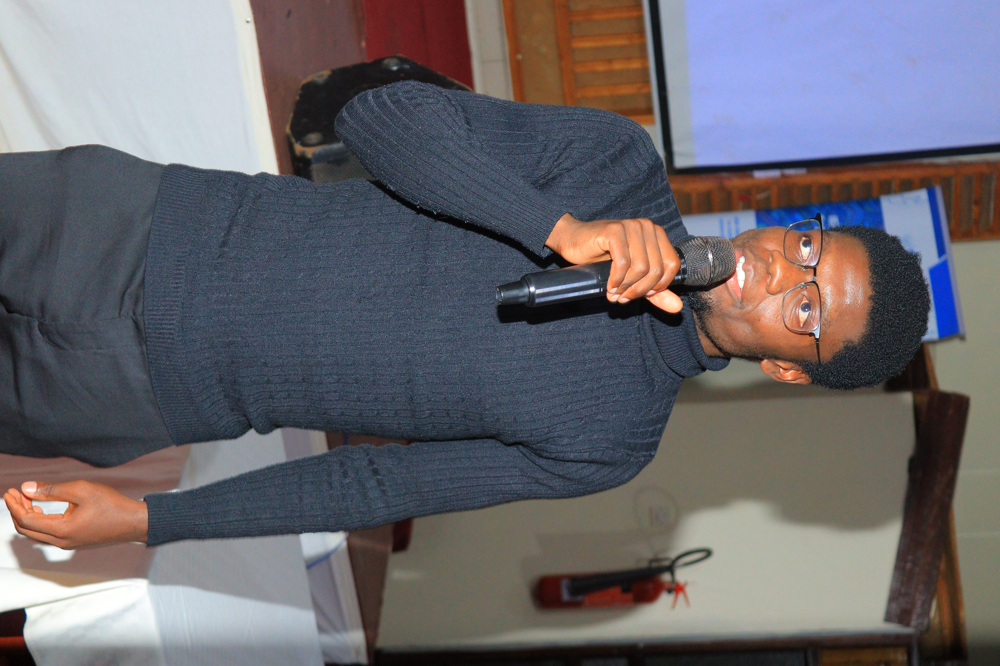

Final year EEE student at the Technical University of Kenya, specializing in Telecommunications and Information Engineering. I build systems that sit at the intersection of signals, networks, and data, from embedded IoT devices to the dashboards that make sense of what they measure.
I'm a final year Electrical and Electronic Engineering student at the Technical University of Kenya, specializing in Telecommunications and Information Engineering. My work spans RF and microwave theory, wireless networking, and satellite and mobile communications, alongside hands on experience building IoT systems and analyzing data.
I'm currently on a three month industrial attachment at the Kenya Broadcasting Corporation, working within the Technical Engineering Department on broadcast signal flow and transmission systems. Alongside my studies, I teach SQL and Power BI at Tech Savvy Institute and serve as Vice Chairperson of the IEEE Student Branch at TUK.
I'm drawn to problems where communication systems and data meet, designing the hardware that gathers a signal, and the pipeline that turns it into something useful.
Final year project combining embedded sensing with on device machine learning to detect falls in real time and report health metrics over MQTT, aimed at low cost, responsive elderly care monitoring.
View Repository →Additional work including KiCad PCB designs and Power BI / SQL teaching projects is being documented and will be added here.